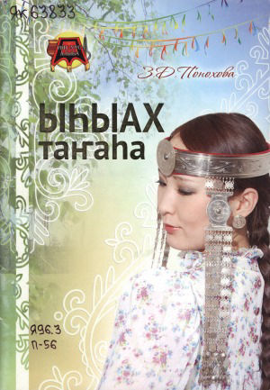

Винокурова Е.И.
"Өбүгэ үгэһэ.2кылаас"
Федоров И.Г.
"Өбүгэбит олоҕо дьаһаҕа. Уклад жизни народа саха"
Винокурова Е.И. "Саха өрөспүүбүлүкэтин норуоттарын култуурата"
Барахова М.Е. "Саха төрүт өйдөбүллэрэ"
Иванова - Айтыына Г.Н. "Өбүгэ үгэһин утумнаан"
"Саха ыалын бастыҥ кинигэтэ"
«Ысыах в благословенной долине Туймаада»
Федоров А.С.
«Саха төрүт оонньуулара»
Саввинов В.И.
«Саха мас муос тимир оҥоһуктара»
Павлова З.Е.
«Кыл - сиэл оҥоһуктар»
Петрова С.И.
«Өбүгэ таҥаһа уонна итэҕэл. Традиционная одежда и мировоззрение наших предков»
Понохова З.Д.
«Өбүгэбит таҥаһын сөргүтэн»
